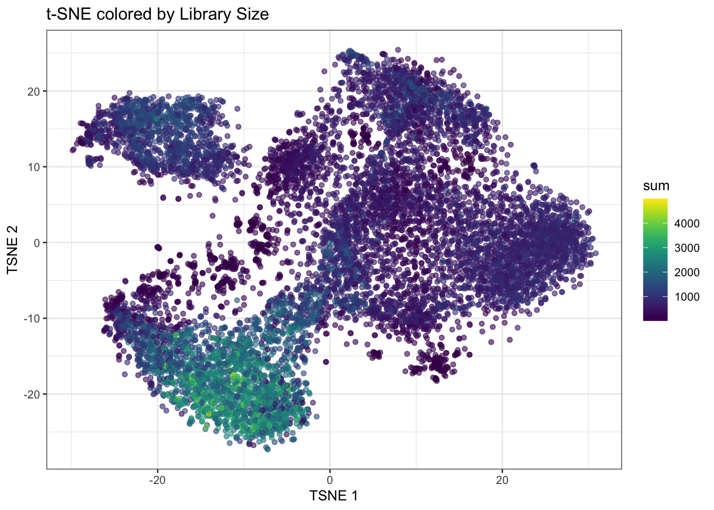

Exercise 3
Normalisation, Feature Selection and Dimensionality Reduction
In this section we will focus on normalisation, feature selection and dimensionality reduction of spatial transcriptomics data, which are important preprocessing steps before downstream analysis such as clustering and marker gene identification. We will focus on the specific challenges and considerations when dealing with spatially-resolved transcriptomics data, as opposed to traditional single-cell RNA-seq data.
Learning Objectives
By the end of this exercise, you will be able to:
- Normalize spatial transcriptomics data to account for technical variations.
- Perform feature selection to identify highly variable genes (HVGs).
- Apply dimensionality reduction techniques like PCA.
- Visualize the results of dimensionality reduction in both reduced dimension space and spatial context.
Libraries
Load SpatialExperiment Object
We will start by loading the SpatialExperiment object from the previous exercise, which contains only filtered spots and genes with more than 1 count across all spots.
# Load the SpatialExperiment object from the .qs2 file.
spe <- loadHDF5SummarizedExperiment(dir="results/day1/", prefix="01.2_spe")Normalization
Normalization is a critical step in preprocessing spatial transcriptomics data to account for technical variations and make gene expression levels comparable across spots. We will log normalise raw counts with scuttle::logNormCounts()
# Log-normalize counts for downstream analysis
spe <- logNormCounts(spe)What is the name of the new assay added for normalized counts?
# Have a look at the assays
spe@assaysAn object of class "SimpleAssays"
Slot "data":
List of length 2
names(2): counts logcounts# Directly get the assay names(x)
assayNames(spe)[1] "counts" "logcounts"After log-normalization, we can inspect the computed size factors. Size factors are used to account for differences in sequencing depth between spots.
# Display a summary of the calculated size factors.
summary(sizeFactors(spe)) Min. 1st Qu. Median Mean 3rd Qu. Max.
0.1179 0.5081 0.7626 1.0000 1.2766 4.9097 # Visualise the spatial distribution of size factors on the tissue slide.
colData(spe)$sizeFactors <- sizeFactors(spe)
plotVisium(spe, annotate = "sizeFactors", zoom = TRUE, point_shape = 22)
Do you observe any spatial patterns or gradients for the size factors across the tissue section? What do you think they reflect?
Bonus: spatially-aware normalization
While logNormCounts provides a general-purpose normalization, specialized spatially-aware normalization methods exist. These methods aim to correct for technical variations while preserving true spatial biological patterns. Depending on the dataset and research question, exploring such advanced normalization techniques might be beneficial.
If time is left at the end of this practical, explore the normalization strategy implemented in the SpaNorm package.
Feature Selection
Highly Variable Genes (HVGs)
Similar to scRNA-seq analysis, feature selection is a crucial step to focus on genes that show significant biological variation across spots, and thus increase the signal to noise ratio. We typically aim at focusing on “Highly Variable Genes” (HVGs) as these are more likely to distinguish different cell types or spatial domains.
In order to identify HVGs, we will first model the gene variance using a Poisson noise model with scran::modelGeneVarByPoisson()
# Model gene variance to identify highly variable genes.
# This function fits a mean-variance trend to the log-normalized counts.
dec <- modelGeneVarByPoisson(spe)
## Sort by biological variance
dec <- dec[order(dec$bio, decreasing = T), ]
# Visualize the mean-variance relationship and the fitted trend.
# This plot helps to understand how gene variability changes with expression level.
plot(dec$mean, dec$total,
xlab = "Mean expression (log-counts)",
ylab = "Total variance (log-counts)",
main = "Mean-Variance Trend"
)
curve(metadata(dec)$trend(x), add = TRUE, col = "dodgerblue", lwd = 2)
How do you interpret this plot, compared to similar ones generated from scRNA-seq datasets?
Once we have modeled the gene variance, we can proceed to select the top HVGs. For demonstration purposes, we will visualize the expression patterns of the top 6 HVGs on the tissue slide. We exclude the mitochondrial genes, since those genes tend to be highly variable but do not provide much information about cell types or spatial domains.
# identify mitochondrial genes
is.mito <- rownames(spe)[grepl("^MT-", rownames(spe))]
# Top 6 HVGs
top_HVG <- row.names(dec[!row.names(dec) %in% is.mito, ])[1:6]
top_HVG[1] "IGKC" "OLFM4" "IGHG1" "COL3A1" "PIGR" "COL1A1"# Create a plot for each gene in top_HVG
ps <- lapply(top_HVG, \(.) {
plotCoords(spe,
annotate = .,
assay_name = "logcounts") }) # use "logcounts" assay to visualise log normalised counts
# figure arrangement and change colors
patchwork::wrap_plots(ps, nrow = 2) &
theme(legend.key.width = unit(0.4, "lines"),
legend.key.height = unit(0.8, "lines")) &
scale_color_gradientn(colors = rev(hcl.colors(9, "Rocket")))
How would you define the spatial expression patterns of these genes? Look a bit for some information on these genes (e.g., on the Uniprot website) to get a hint at which cell types and domains they could highlight.
For downstream analysis, we define a larger group of HVG and add the information of whether a genes is in the HVG list or not in a rowData slot:
# Select the top 1000 highly variable genes.
hvg <- getTopHVGs(dec, n = 1000)
# Store HVG information in rowData
rowData(spe)$hvg <- rowData(spe)$Symbol %in% hvg
# Display the range of biological variation for the selected HVGs
dec[hvg, ]$bio |> summary() Min. 1st Qu. Median Mean 3rd Qu. Max.
0.01648 0.02117 0.02937 0.08625 0.05359 4.55103 # Have a look a the new column added
rowData(spe)DataFrame with 17952 rows and 5 columns
ID Symbol Type subsets_Mito hvg
<character> <character> <factor> <logical> <logical>
SAMD11 ENSG00000187634 SAMD11 Gene Expression FALSE FALSE
NOC2L ENSG00000188976 NOC2L Gene Expression FALSE FALSE
KLHL17 ENSG00000187961 KLHL17 Gene Expression FALSE FALSE
PLEKHN1 ENSG00000187583 PLEKHN1 Gene Expression FALSE FALSE
PERM1 ENSG00000187642 PERM1 Gene Expression FALSE FALSE
... ... ... ... ... ...
MT-ND4L ENSG00000212907 MT-ND4L Gene Expression TRUE TRUE
MT-ND4 ENSG00000198886 MT-ND4 Gene Expression TRUE TRUE
MT-ND5 ENSG00000198786 MT-ND5 Gene Expression TRUE TRUE
MT-ND6 ENSG00000198695 MT-ND6 Gene Expression TRUE TRUE
MT-CYB ENSG00000198727 MT-CYB Gene Expression TRUE TRUESpatially Variable Genes (SVGs)
We will go very quickly over this topic, which will be discussed in depth tomorrow. Today, the idea is to get an intuition about the difference between HVGs and SVGs. For this, we select randomly 6 other HVGs from the list, and plot their expression:
# Select randomly 6 HVGs
set.seed(123)
random_HVG <- sample(hvg, size = 6)
# Create a plot for each gene in top_HVG
ps <- lapply(random_HVG, \(.) {
plotCoords(spe,
annotate = .,
assay_name = "logcounts") }) # use "logcounts" assay to visualise log normalised counts
# figure arrangement and change colors
patchwork::wrap_plots(ps, nrow = 2) &
theme(legend.key.width = unit(0.4, "lines"),
legend.key.height = unit(0.8, "lines")) &
scale_color_gradientn(colors = rev(hcl.colors(9, "Rocket")))
How would you define the spatial expression patterns of these genes? What is the difference with genes at the top of the list? Which ones would you qualify as SVGs?
Dimensionality Reduction (DR)
Thereafter we make use of the highly variable genes (HVGs) to perform dimensionality reduction and clustering.
Non-spatially aware DR:
PCA
We can perform dimensionality reduction using Principal Component Analysis (PCA) on the log-normalized expression values of the HVGs. This method is agnostic to spatial information, and focuses solely on capturing the main axes of variation in the gene expression data.
# Run PCA on the log-normalized counts of the HVGs
spe <- runPCA(spe, ncomponents = 30, subset_row = rowData(spe)$hvg)
# Visualize the explained variance by each principal component.
# This helps in determining how many PCs capture most of the variance.
plot(attr(reducedDim(spe, "PCA"), "percentVar"),
xlab = "PC", ylab = "Proportion of variance explained",
main = "PCA Scree Plot"
)Based on the scree plot, how many principal components would you consider for downstream analysis? Why?
Bonus: You can also have look at the scran::getDenoisedPCs function to help you make this choice.
We can select the first 10 PCs for downstream analysis, as they seem to capture a significant proportion of the variance in the data before the explained variance starts to level off.
Choose the number of PCs accordingly for downstream analysis. Visualize the PCs on the tissue slice coordinates.
# Run PCA on the log-normalized counts of the HVGs using the top PCs, for example 10 PCs
spe <- runPCA(spe, ncomponents = 10, subset_row = rowData(spe)$hvg)
# Get the PCA results
pcs <- reducedDim(spe, "PCA")
# Visualize PCs on the tissue slice coordinates
ps <- lapply(colnames(pcs), \(.) {
spe[[.]] <- pcs[, .]
plotCoords(spe, annotate = .)
})
# Arrange the plots and customize colors
patchwork::wrap_plots(ps, nrow = 2) &
theme(legend.key.width = unit(0.4, "lines"),
legend.key.height = unit(0.8, "lines")) &
scale_color_gradientn(colors = rev(hcl.colors(9, "Rocket")))
What do you notice? How do you interpret it?
Bonus Exercise
Extract the genes most associated with one of these PCs
We observe a strong correlation between the PCs scores and the expression patterns observed above for the top HVGs, suggesting that they refelct cell type or domain biology.
To extract the 10 genes most associated to PC2:
attributes(reducedDims(spe)[["PCA"]])$rotation[, "PC2"] |> abs() |> sort(decreasing = TRUE) |> names() |> head(n=10) [1] "COL3A1" "COL1A1" "COL1A2" "CXCR4" "CD74" "IGKC" "MMP2" "TXNIP"
[9] "A2M" "SPARC" Spatially aware DR:
Banksy
We can also perform spatially aware dimensionality reduction using the Banksy method, which integrates spatial coordinates and gene expression into the PCA framework. This allows us to capture spatial patterns in the data while reducing dimensionality.
# 'Banksy' parameter settings
k <- 20 # consider first order neighbors
l <- 0.8 # use spatial information with weight lambda
a <- "logcounts" # assay to use
xy <- c("array_row", "array_col") # spatial coordinate names
# compute spatially aware 'Banksy' PCs, using the HVGs only
set.seed(112358)
tmp <- computeBanksy(spe[rowData(spe)$hvg, ],
assay_name=a,
coord_names=xy,
k_geom=k,
parallel=T,
num_cores=4)
tmp <- runBanksyPCA(tmp,
lambda=l,
npcs=10)
reducedDim(spe, "PCA_banksy") <- reducedDim(tmp) # store 'Banksy' PCs in original objectWhile this is running, have a look at the Banksy paper to understand better what the method is doing.
Have a look at the spe object to see the dimensionality reduction slots. How many dimensionality reductions are stored now? What are their names and what do they represent?
speclass: SpatialExperiment
dim: 17952 12615
metadata(2): resources spatialList
assays(2): counts logcounts
rownames(17952): SAMD11 NOC2L ... MT-ND6 MT-CYB
rowData names(5): ID Symbol Type subsets_Mito hvg
colnames(12615): s_016um_00144_00175-1 s_016um_00204_00145-1 ...
s_016um_00193_00227-1 s_016um_00109_00223-1
colData names(36): barcode in_tissue ... sizeFactor sizeFactors
reducedDimNames(3): PCA_artifacts PCA PCA_banksy
mainExpName: Gene Expression
altExpNames(0):
spatialCoords names(2) : pxl_col_in_fullres pxl_row_in_fullres
imgData names(4): sample_id image_id data scaleFactorreducedDimNames(spe)[1] "PCA_artifacts" "PCA" "PCA_banksy" There are now three dimensionality reductions stored in the spe object: :“PCA_artifacts”, “PCA” and “PCA_banksy”. “PCA_artifacts” was computed to capture technical artifacts in a previous exercise (QC step).
“PCA” represents the non-spatially aware principal components, while “PCA_banksy” represents the spatially aware principal components computed using the Banksy method. Both methods have used HVGs for dimensionality reduction.
In the same way as before, we can visualise the Banksy PCs on the tissue slice coordinates.
Select PCs from Banksy dimensionality reduction space and visualise them on the tissue slice. Do you observe any spatial patterns? How do they compare to the non-spatial PCs?
## Visualize PCs on the tissue slice coordinates
pcs <- reducedDim(spe, "PCA_banksy")
ps <- lapply(colnames(pcs), \(.) {
spe[[.]] <- pcs[, .]
plotCoords(spe, annotate = .)
})
patchwork::wrap_plots(ps, nrow = 2) &
theme(legend.key.width = unit(0.4, "lines"),
legend.key.height = unit(0.8, "lines")) &
scale_color_gradientn(colors = rev(hcl.colors(9, "Rocket")))
Try to change Banksy parameters k and lambda. How does it affect the results?
Run UMAP
For visualization purposes only, we’ll produce UMAPs based on on both spatially aware and not spatially aware PCA results:
# Visualise
plotReducedDim(spe, dimred = "UMAP_tx", colour_by = "detected") +
scale_colour_gradient(trans = "log", high = "yellow", low = "red")
plotReducedDim(spe, dimred = "UMAP_banksy", colour_by = "detected") +
scale_colour_gradient(trans = "log", high = "yellow", low = "red")
If you tried different parameters for Banksy, how does it affect the UMAP results?
Save data for later
spe_HVG <- spe
saveHDF5SummarizedExperiment(spe_HVG, dir="results/day1", prefix="01.3_spe", replace=TRUE,
chunkdim=NULL, level=NULL, as.sparse=NA,
verbose=NA)